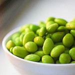
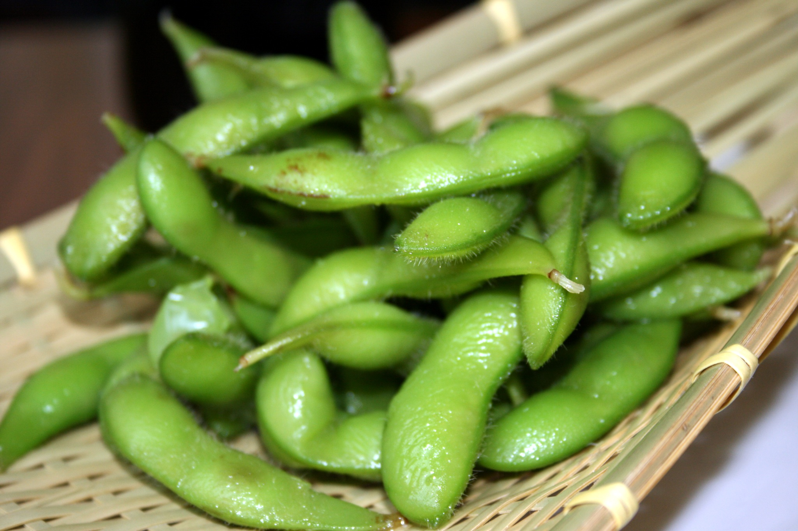
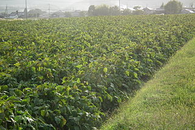
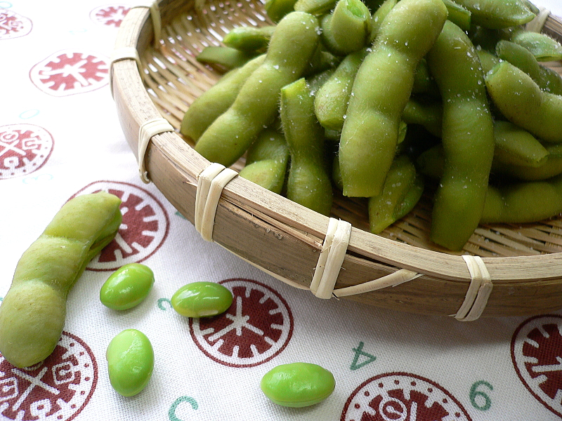

You may have noticed your friends snacking on a trendy green food... in case you didn't know, it's called "Edamame" and it's amazing!
You may have noticed your friends snacking on a trendy green food... in case you didn't know, it's called "Edamame" and it's amazing!

Edamame is a delicious appetizer, served often at Japanese restaurants, and also enjoyed at home.

While good on it's own, Edamame is typically enjoyed dipped in soy-sauce, or sprinked with salt.

Edamame are a fantastic alternative source of protein, making them a perfect snack for vegans.
If you're not tempted to try some after these photos, you may be crazy....
Delicious!
This file is licensed under the Creative Commons Attribution-Share Alike 2.0 Generic license.
Author: Tammy Green (aka Zesmerelda) from Chicago Upscale Dining
Healthy!
This file is licensed under the Creative Commons Attribution-Share Alike 3.0 Unported license.
Author: 松岡明芳
Easy!
This file is licensed under the Creative Commons Attribution 2.0 Generic license.
Author: yomi955 @ Flickr.com
Bryan's Edamame Site
Copyright © 2016 · All Rights Reserved · Bryan's Edamame Site